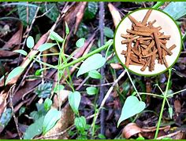

Basonym of Drug
Manjistha
Main Synonym
- Vikasa
- Samanga
- Kala
- Kalmeshika
- Yojanvalli
- Bhandi
- Bhandiri
- Mandukaparni
- Rasayani
- Aruna
- Raktayastika
- Vastraranjini
- Raktangi
- Manjusha
Regional Name
- Gujarati: Majith
- Hindi: Manjith, Manith
- Marathi: Manjisth
- Telugu: Manjisthtithi
- Farsi: Rodaka
- English: Indian Madder
Botanical Name
Rubia cordifolia
Family
Rubiaceae
External Morphology
A long perennial climbing herb
Useful Parts
Important Phytoconstituent
- Alizarine
- Anthraquine
- Manjisthin
- Purpuroxathine
- Rubifolic Acid
- Xanthopurpurin
Rasa Panchak
- Rasa: Madhura, Tikta
- Guna: Guru, Ruksha
- Virya: Ushna
- Vipaka: Katu
Action
Therapeutic Indication
- Grahi (Reduce excessive secretion)
- Chakshusya (Good for eyes)
- Kandughna (Treat pruritus)
- Kusthaghna (Useful in skin disorders)
- Jvarahara (Anti-pyretic)
- Vranaropaka (Wound healer)
Therapeutic Uses
- Kustha: Manjistha root decoction is useful to treat skin diseases.
- Manjisthmeha: Decoction with sandalwood powder is given in hemoglobinuria.
- Vrana: Oil prepared with Manjistha, Raktachanadan, and Murva are useful in chronic wounds.
Dose
Formulations
- Mahamanjisthadi Kwath
- Laghu Manjisthadi Kwath
- Pinda Taila
- Manjisthadi Lepa
- Trunaka Taila
- Panchtikta Guggulu
- Adityapaka Taila
Adverse Effect
Not Known